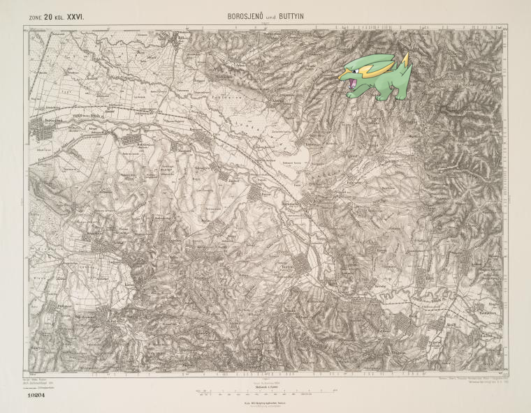
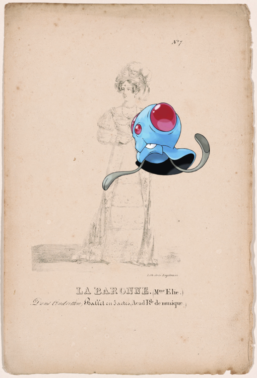

-
Dusclops on Hungarian Landwehr Infantry, 1896.
-
Noivern ; Morgantown, West Virginia
-
Mandibuzz – Troupeau de porcs..
-
Octillery @ Tell mother not to worry
-
 Cranidos, Simisear | Karta Ukrainy V.Boplana 1650g. Tekst str. 15.
Cranidos, Simisear | Karta Ukrainy V.Boplana 1650g. Tekst str. 15. -
Electrike @ Borosjeno und Buttyin.
-
Happiny, Ho-Oh | Hotel Victoria
-
 , Zorua @ The Mayflower.
, Zorua @ The Mayflower. - 
-
Vaporeon – De new brack coon
-
Rufflet | Troupeau de vaches.
-
Munna ; S.S. President Johnson!
-
Stunfisk | Zalozce..
-

-
Corphish on 122-Richter-Argentine-Act II
-
Raticate @ Bentley, Richard. ALS to [n.y.]!
-
, Victreebel | Davezac, Auguste
-
Girafarig + [Thomas Sydenham.]
-
Swablu, Burmy ; A map of Caracas..
-
Mareep ; Registro de Esclavos: Lucia!
-
Aggron – T/v "Cristoforo Colombo"
-
 Stunky + Document
Stunky + Document -
Jumpluff on Lorenzo de Medicis!!
-
Scyther on Statue of Joseph Warren, Bunker HIll.!
-

-
 Pignite – Stockholm.
Pignite – Stockholm. -
Quagsire, Trapinch on Regimentsarzt. 1780.
-
 Gourgeist-Average | Front cover of binding.
Gourgeist-Average | Front cover of binding.